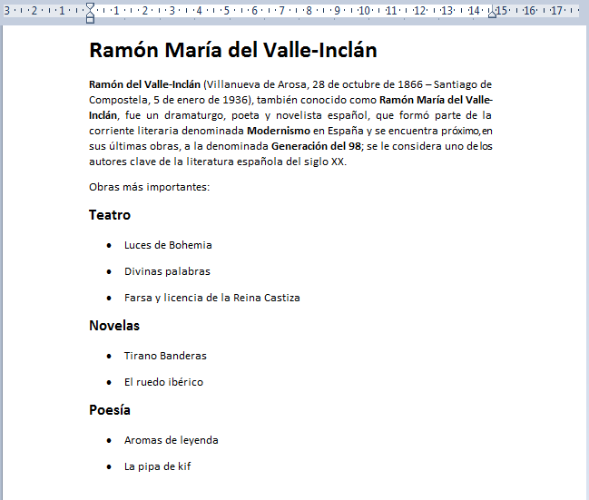

1. Introducción

Vamos a iniciar las prácticas de Wordpad, una aplicación inculida en todos los Windows 7 que nos servirá de base para aprender los principales conceptos de editición de textos.
2. Abrir Wordpad
Empecemos a trabajar con uno de los elementos más característicos de un escritorio Windows, el Menú inicio.
- Pulsa con el ratón en el icono de Inicio de Windows.
- Busca y abre la aplicación Wordpad.
- Maximiza la aplicación para que ocupe toda la pantalla.
2. Trabajar con WordPad
{kind=link}
Vamos a iniciar las prácticas de Wordpad, una aplicación inculida en todos los Windows 7 que nos servirá de base para aprender los principales conceptos de editición de textos.
Os voy a proporcionar un texto escrito y formateado con WordPad. Me gustaría que intentárais redactarlo y formatearlo tal cual está en la página. Tened en cuenta los siguientes consejos:
- Todos los párrafos debemos redactarlos de manera continuada, sin preocuparnos por los saltos de línea.
- Saltaremos de línea cuando hayamos terminado de redactar un párrafo. Para saltar de línea utilizamos la tecla Intro
- Es conveniente escribir primero todo el texto, y posteriormente dar formato a los párrafos.
- Para formatear una palabra o párrafo, primero la seleccionaremos utilizando la técnica de seleccionar texto con el ratón que hemos visto en la presentación.